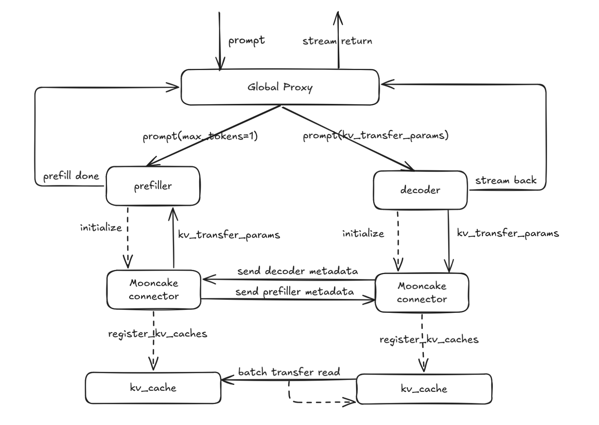
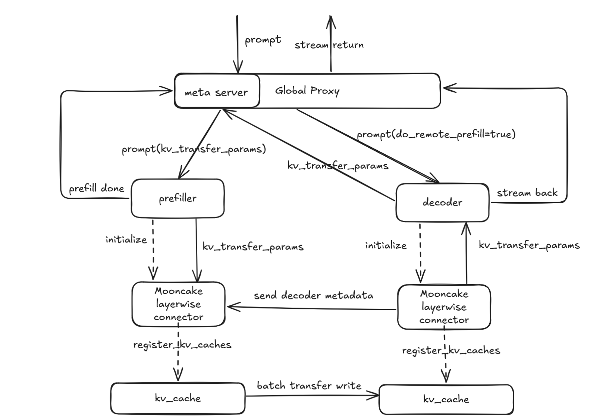

Disaggregated-prefill
Why disaggregated-prefill?
This feature addresses the need to optimize the Time Per Output Token (TPOT) and Time To First Token (TTFT) in large-scale inference tasks. The motivation is two-fold:
Adjusting Parallel Strategy and Instance Count for P and D Nodes
Using the disaggregated-prefill strategy, this feature allows the system to flexibly adjust the parallelization strategy (e.g., data parallelism (dp), tensor parallelism (tp), and expert parallelism (ep)) and the instance count for both P (Prefiller) and D (Decoder) nodes. This leads to better system performance tuning, particularly for TTFT and TPOT.Optimizing TPOT Without the disaggregated-prefill strategy, prefill tasks are inserted during decoding, which results in inefficiencies and delays. Disaggregated-prefill solves this by allowing for better control over the system's TPOT. By managing chunked prefill tasks effectively, the system avoids the challenge of determining the optimal chunk size and provides more reliable control over the time taken for generating output tokens.
Usage
vLLM Ascend currently supports two types of connectors for handling KV cache management:
MooncakeConnector: D nodes pull KV cache from P nodes.
MooncakeLayerwiseConnector: P nodes push KV cache to D nodes in a layered manner.
For step-by-step deployment and configuration, refer to the following guide:
https://docs.vllm.ai/projects/ascend/en/latest/tutorials/features/pd_disaggregation_mooncake_multi_node.html
How It Works
1. Design Approach
Under the disaggregated-prefill, a global proxy receives external requests, forwarding prefill to P nodes and decode to D nodes; the KV cache (key-value cache) is exchanged between P and D nodes via peer-to-peer (P2P) communication.
2. Implementation Design
Our design diagram is shown below, illustrating the pull and push schemes respectively.


Mooncake Connector
The request is sent to the Proxy's
_handle_completionsendpoint.The Proxy calls
select_prefillerto choose a P node and forwards the request, configuringkv_transfer_paramswithdo_remote_decode=True,max_completion_tokens=1, andmin_tokens=1.After the P node's scheduler finishes prefill,
update_from_outputinvokes the schedule connector'srequest_finishedto defer KV cache release, constructskv_transfer_paramswithdo_remote_prefill=True, and returns to the Proxy.The Proxy calls
select_decoderto choose a D node and forwards the request.On the D node, the scheduler marks the request as
RequestStatus.WAITING_FOR_REMOTE_KVS, pre-allocates KV cache, callskv_connector_no_forwardto pull the remote KV cache, then notifies the P node to release KV cache and proceeds with decoding to return the result.
Mooncake Layerwise Connector
The request is sent to the Proxy's
_handle_completionsendpoint.The Proxy calls
select_decoderto choose a D node and forwards the request, configuringkv_transfer_paramswithdo_remote_prefill=Trueand setting themetaserverendpoint.On the D node, the scheduler uses
kv_transfer_paramsto mark the request asRequestStatus.WAITING_FOR_REMOTE_KVS, pre-allocates KV cache, then callskv_connector_no_forwardto send a request to the metaserver and waits for the KV cache transfer to complete.The Proxy's
metaserverendpoint receives the request, callsselect_prefillerto choose a P node, and forwards it withkv_transfer_paramsset todo_remote_decode=True,max_completion_tokens=1, andmin_tokens=1.During processing, the P node's scheduler pushes KV cache layer-wise; once all layers pushing is complete, it releases the request and notifies the D node to begin decoding.
The D node performs decoding and returns the result.
3. Interface Design
Taking MooncakeConnector as an example, the system is organized into three primary classes:
MooncakeConnector: Base class that provides core interfaces.
MooncakeConnectorScheduler: Interface for scheduling the connectors within the engine core, responsible for managing KV cache transfer requirements and completion.
MooncakeConnectorWorker: Interface for managing KV cache registration and transfer in worker processes.
4. Specifications Design
This feature is flexible and supports various configurations, including setups with MLA and GQA models. It is compatible with A2 and A3 hardware configurations and facilitates scenarios involving equal TP setups and certain unequal TP setups across multiple P and D nodes.
Feature |
Status |
|---|---|
A2 |
🟢 Functional |
A3 |
🟢 Functional |
equal TP configuration |
🟢 Functional |
unequal TP configuration |
🟢 Functional |
MLA |
🟢 Functional |
GQA |
🟢 Functional |
🟢 Functional: Fully operational, with ongoing optimizations.
🔵 Experimental: Experimental support, interfaces and functions may change.
🚧 WIP: Under active development, will be supported soon.
🟡 Planned: Scheduled for future implementation (some may have open PRs/RFCs).
🔴 NO plan/Deprecated: No plan or deprecated by vLLM.
DFX Analysis
1. Config Parameter Validation
Validate KV transfer config by checking whether the kv_connector type is supported and whether kv_connector_module_path exists and is loadable. On transfer failures, emit clear error logs for diagnostics.
2. Port Conflict Detection
Before startup, perform a port-usage check on configured ports (e.g., rpc_port, metrics_port, http_port/metaserver) by attempting to bind. If a port is already in use, fail fast and log an error.
3. PD Ratio Validation
Under non-symmetric PD scenarios, validate the P-to-D tp ratio against expected and scheduling constraints to ensure correct and reliable operation.
Limitations
Heterogeneous P and D nodes are not supported—for example, running P nodes on A2 and D nodes on A3.
In non-symmetric TP configurations, only cases where the P nodes have a higher TP degree than the D nodes and the P TP count is an integer multiple of the D TP count are supported (i.e., P_tp > D_tp and P_tp % D_tp = 0).